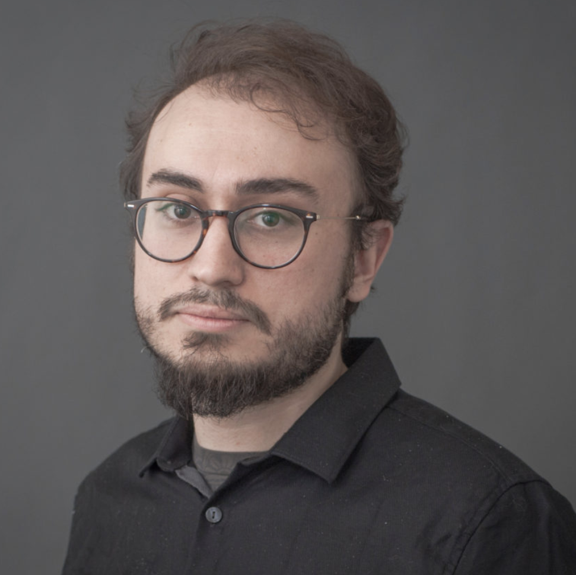

Martinos Center · MGH · Harvard Medical School
Berkin Bilgic
BRAIN Lab
I am an Associate Professor in Radiology at Massachusetts General Hospital and Harvard Medical School. I head the BRAIN (Bilgic Reconstruction Acquisition for Imaging Neuroscience) lab at the Martinos Center for Biomedical Imaging.
Research interests
I am interested in MRI data acquisition and reconstruction, in particular:
Fast clinical imaging
Self-supervised machine learning
Quantitative parameter mapping
Diffusion imaging
Open-source pulse sequence development
Appointments & education
- Nov 2023 – presentAssociate Professor in Radiology, MGH/Harvard
- Jun 2018 – presentAffiliated Faculty, Health Sciences & Technology, Harvard-MIT
- Jun 2019 – Nov 2023Assistant Professor in Radiology, MGH/Harvard
- May 2016 – Jun 2019Instructor in Radiology, MGH/Harvard
- Feb 2013 – May 2016Research Fellow in Radiology, MGH/Harvard
- Feb 2010 – Feb 2013PhD in EECS, MIT
- Sep 2008 – Feb 2010SM in EECS, MIT
- Sep 2004 – Jun 2008BS in EE, Bogazici University
- Sep 2004 – Jun 2008BS in Physics, Bogazici University

Berkin Bilgic
Building 75, 13th Street
Charlestown, MA 02129
bbilgic AT mgh.harvard.edu
617-866-8740
News, abstracts & software
News from the ISMRM'25 conference
Shohei delivers an educational talk at the MRI Data Multi-Site Harmonization session
We presented 4 talks, 3 power pitches and 3 posters
News from the ISMRM'24 conference
News: Abstracts and software from the ISMRM'23 conference
H Yu et al: SubZero: Subspace Zero-Shot MRI Reconstruction, #0829, power pitch
A Heydari et al: Joint MR T1 and T2* Parameter Mapping with Scan Specific Unsupervised Networks, #1617, digital poster
IA Vurankaya et al: Self-Supervised Deep Learning Reconstruction for Highly Accelerated Diffusion Imaging, #0831, power pitch
Y Arefeen et al: Improved T1 and T2 mapping in 3D-QALAS using temporal subspaces and Cramer-Rao-bound flip angle optimization enabled by auto-differentiation, #0671, oral
X Wang et al: Model-based phase-difference reconstruction for accelerated phase-based T2 mapping, #4960, digital poster
X Wang et al: An Open-Source Self-navigated Multi-Echo Gradient Echo Acquisition for R2* and QSM mapping using Pulseq and Model-Based Reconstruction, #0420, combined educational & scientific session
Y Jun et al: Zero-DeepSub: Zero-Shot Deep Subspace Reconstruction for Multiparametric Quantitative MRI Using QALAS, #1105, power pitch
Y Jun et al: SSL-QALAS: Self-Supervised Learning for Multiparametric Quantitative MRI Using QALAS, #2155, digital poster
TH Kim et al: Multi-echo MRI Reconstruction with Iteratively Refined Zero-shot Spatio-Temporal Deep Generative Prior, #0828, power pitch
J Cho et al: VUDU-SAGE: Efficient T2 and T2* Mapping using Joint Reconstruction for Motion-Robust, Distortion-Free, Multi-Shot, Multi-Echo EPI, #2202, digital poster
G Varela-Mattatall et al: Rapid Mesoscale MP2RAGE Imaging at Ultra High Field with Controlled Aliasing, #0539, oral
Abstracts and software from the Data Sampling and Image Reconstruction workshop, Sedona'23
Y Jun et al: Deep Subspace Reconstruction with Zero-Shot Learning for Multiparametric Quantitative MRI, oral
TH Kim et al: Zero-shot Prior Learning of Spatio-temporal Multi-echo/contrast MRI Reconstruction with Iterative Refinement
G Varela Mattatall et al: Parallel CS-Wave
X Wang et al: Model-Based Phase-Difference Reconstruction for Accelerated Phase-Based T2 Mapping
J Cho et al: VUDU-SAGE: Efficient T2 and T2* Mapping using Joint Reconstruction for Motion-Robust, Distortion-Free, Multi-Shot, Multi-Echo EPI
Y Arefeen et al: Improved T1 and T2 mapping in 3D-QALAS using temporal subspaces and flip angle optimization enabled by auto-differentiation
X Wang et al: Open-Source Self-navigated Multi-Echo GRE Acquisition for R2* and QSM mapping using Pulseq and Model-Based Reconstruction
X Wang et al: Model-Based Reconstruction for Joint Estimation of T1, T2 and B0 Inhomogeneity Maps Using Single-Shot Inversion-Recovery Multi-Echo Radial FLASH
Software from the ISMRM'22 conference
Y Arefeen et al: Learning compact latent representations of signal evolution for improved shuffling reconstruction, #0247
J Cho et al: Variable Flip, Blip-Up and -Down Undersampling (VUDU) Enables Motion-Robust, Distortion-Free Multi-Shot EPI, #0757
J Cho et al: Rapid Quantitative Imaging Using Wave-Encoded Model-Based Deep Learning for Joint Reconstruction, #0435
MY Avci et al: Quantifying the uncertainty of neural networks using Monte Carlo dropout for safer and more accurate deep learning based quantitative MRI, #4978
A Lin et al: Bayesian sensitivity encoding enables parameter-free, highly accelerated joint multi-contrast reconstruction, #3444
TH Kim et al: Accelerated MR Parameter Mapping with Scan-specific Unsupervised Networks, #4402
G Varela-Mattatall et al: Rapid CS-Wave MPRAGE acquisition with automated parameter selection, #1604
Educational talk from ISMRM'22
Value of multi-contrast techniques (neuro), Wednesday session on Added Value of Sophisticated Multicontrast Techniques